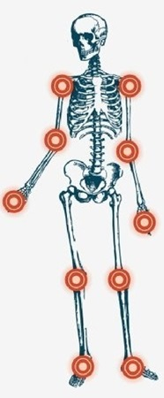
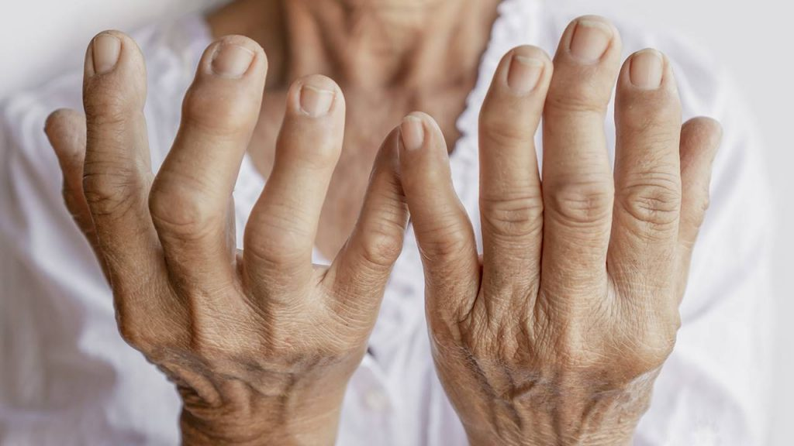

Artritis
Atritis según la parte del cuerpo

Descripción
La artritis es una inflamación de una o más articulaciones, que puede causar dolor, hinchazón, rigidez y disminución del rango de movimiento. Existen diferentes tipos de artritis, siendo los más comunes la artritis osteoartrítica y la artritis reumatoide.
Causas
Las causas de la artritis pueden ser variadas y dependen del tipo específico de la enfermedad. Algunas de las causas más comunes incluyen:
- Artritis Osteoartrítica: Desgaste del cartílago en las articulaciones debido al envejecimiento, lesiones o sobrecarga.
- Artritis Reumatoide: Enfermedad autoinmune donde el sistema inmunológico ataca las articulaciones.
- Factores Genéticos: Predisposición hereditaria.
- Infecciones: Algunas infecciones pueden causar artritis infecciosa.
- Lesiones: Lesiones articulares previas pueden aumentar el riesgo de artritis.
Síntomas
Los síntomas de la artritis varían según el tipo y la gravedad, pero algunos de los más comunes son:
- Dolor Articular: Dolor en una o más articulaciones.
- Hinchazón: Inflamación visible en las articulaciones.
- Rigidez: Dificultad para mover las articulaciones, especialmente por la mañana.
- Reducción del Rango de Movimiento: Limitación en la movilidad de la articulación afectada.
- Calor y enrojecimiento: Enrojecimiento y sensación de calor alrededor de la articulación (más común en la artritis inflamatoria).
Pruebas y exámenes
Para diagnosticar la artritis, los médicos pueden utilizar una variedad de pruebas y exámenes, que incluyen:
- Examen Físico: Evaluación de las articulaciones afectadas.
- Análisis de Sangre: Para detectar marcadores inflamatorios y autoinmunitarios (por ejemplo, factor reumatoide en artritis reumatoide).
- Radiografías: Para evaluar el daño en las articulaciones y el desgaste del cartílago.
- Resonancia Magnética: Para obtener imágenes detalladas de los tejidos blandos y cartilaginosos.
Tratamiento
El tratamiento de la artritis se enfoca en aliviar los síntomas, mejorar la función articular y prevenir el daño adicional. Las opciones incluyen:
- Medicamentos:
- Analgésicos y Antiinflamatorios: Para aliviar el dolor y reducir la inflamación (por ejemplo, ibuprofeno).
- Medicamentos Modificadores de la Enfermedad (DMARDs): Para enfermedades autoinmunes como la artritis reumatoide (por ejemplo, metotrexato).
- Biológicos: Para casos graves de artritis inflamatoria.
- Terapia Física: Ejercicios para mejorar la movilidad y fortalecer los músculos alrededor de la articulación.
- Cambio en el Estilo de Vida: Mantenimiento de un peso saludable, ejercicio regular y una dieta equilibrada.
- Cirugía: En casos severos, procedimientos quirúrgicos como la artroplastia (reemplazo de articulación) pueden ser necesarios.
Expectativas
La artritis es una enfermedad crónica, lo que significa que no tiene cura, pero con un manejo adecuado, muchas personas pueden controlar sus síntomas y mantener una buena calidad de vida. El pronóstico depende del tipo de artritis, la severidad de los síntomas, y la respuesta al tratamiento. Con una atención médica adecuada y un enfoque proactivo en el cuidado personal, muchas personas con artritis pueden llevar una vida activa y plena.